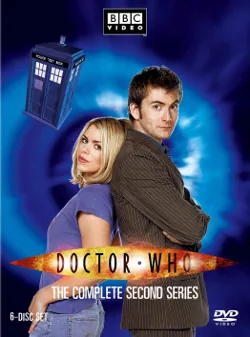

The genetics
The episode's central genetic element is a 'human farm': the Sisters of Plenitude grow artificial humans in pods and infect them with every disease in the galaxy to develop cures for their paying patients, claiming the subjects are just flesh and killing any that become healthy enough to speak or move. The story treats this as an atrocity of medical experimentation behind a façade of compassionate healing; the Doctor is outraged, the victims are shown as lonely people who have never been touched, and the Sisters end up under arrest. A second genetic element is Chip, a force-grown clone created to serve Cassandra, whose body fails when she takes it over. The episode, a mix of comedy and pathos, echoes real debates about using human tissue and clones as research material, without any scientific detail.
How genetics is portrayed
- Overall portrayal of genetics
- negative Creating humans as disease-carrying research material is presented as a hidden atrocity behind a caring façade, exposed and punished; the episode is a cautionary tale about medical experimentation.
- Outcome of the genetic intervention
- negative The grown humans live in suffering and isolation, and when released they kill Sister Jatt and Matron Casp; the cloned Chip's body fails. Only the Doctor's non-genetic cure ends the harm.
- The Sisters of Plenitude
- villain Aim: benevolent, commercial (mixed). The cat nuns grow artificial humans and infect them with every disease to find cures for their hospital's patients, helping some while torturing thousands; the Doctor condemns their 'human farm' and the surviving Sisters are arrested.
The story
The Doctor takes Rose to New Earth in the year five billion and twenty-three, where a telepathic message summons him to a hospital run by the Sisters of Plenitude, an order of cat-like nuns who can cure almost any disease. There he finds the ancient Face of Boe, dying of old age. Meanwhile, Rose is lured to the basement by Chip, a cloned servant of Lady Cassandra, who transfers her mind into Rose's body. Cassandra and the Doctor discover the hospital's secret: thousands of artificially grown humans kept in pods and deliberately infected with every known disease so that the Sisters can find cures. Cassandra releases the infected people to escape, and they kill several Sisters. The Doctor cures them all with a mixture of every medicine sprayed through a disinfectant shower, and the Sisters are arrested. Cassandra finally leaves Rose for Chip's failing body and dies in the arms of her younger self.